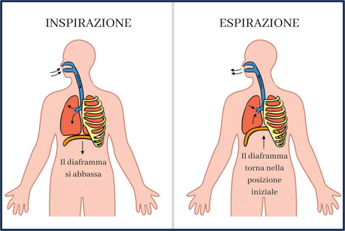

L’aria che respiriamo, quindi, giunge fino ai polmoni, due organi elastici e spugnosi che però non sono in grado di contrarsi da soli perché non presentano fibre muscolari. Sono racchiusi nella cavità toracica, della quale assumono la forma e sono separati dalla cavità addominale attraverso il diaframma.
Il diaframma è un muscolo orizzontale situato alla base dei polmoni che separa il torace dall’addome. Quando il diaframma si abbassa, il torace si espande e l’aria entra, questa fase è detta inspirazione. Quando il diaframma s’innalza, il torace si contrae e l’aria esce, l'espirazione.
